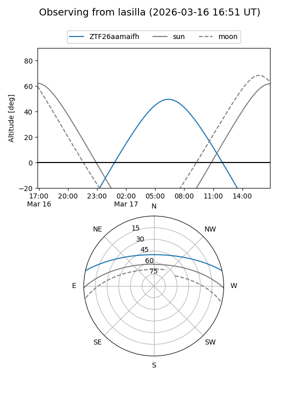
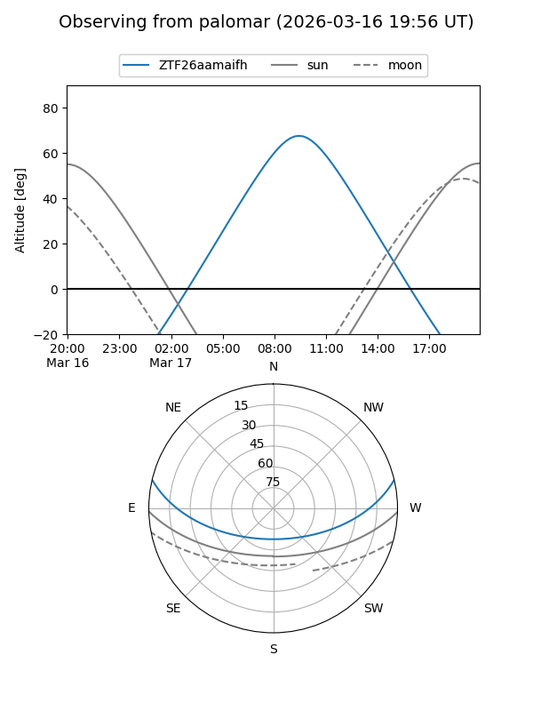

ZTF26aamaifh
Target ZTF26aamaifh at 2026-03-16 13:05
Aliases and brokers:
FINK: link
Lasair: link
ALeRCE: link
alt names
ZTF26aamaifh (ztf,fink_ztf)
Coordinates:
equatorial (ra, dec) = 199.3484,+11.18020
equatorial (HMS+DMS) = 13:17:23.62,+11:10:48.74
galactic (l, b) = (325.1150,+72.92435)
Flags:
Photometry:
last ztfg=18.06
1 ztfg detections
Lightcurve
Visibility


Additional plots